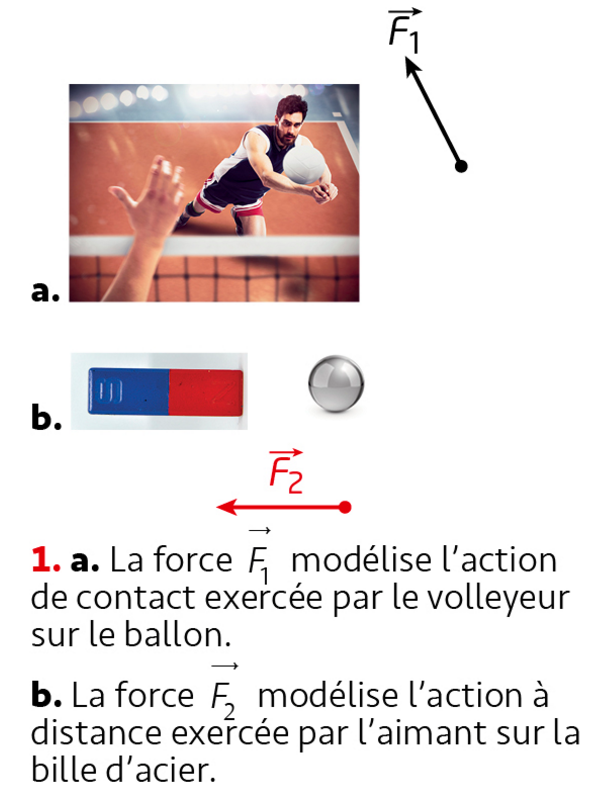

Thème : Mouvements et interactions · C. Poirault-Gauvin
« Si j'ai pu voir vraiment loin, c'est uniquement parce que je me suis tenu sur les épaules de géants. »
— Isaac Newton (1642 – 1727)
Partie 1 — Modéliser une action sur un système
Modéliser l'action d'un système extérieur sur le système étudié par une force ; représenter une force par un vecteur (norme, direction, sens).
Exploiter le principe des actions réciproques.
Distinguer actions à distance et actions de contact.
Identifier les actions modélisées par des forces dont les expressions mathématiques sont connues a priori.
Utiliser l'expression vectorielle de la force d'interaction gravitationnelle.
Utiliser l'expression vectorielle du poids d'un objet, approché par la force d'interaction gravitationnelle s'exerçant sur cet objet à la surface d'une planète.
Représenter qualitativement la force modélisant l'action d'un support dans des cas simples relevant de la statique.
Partie 2 — Principe d'inertie
Exploiter le principe d'inertie ou sa contraposée pour en déduire des informations soit sur la nature du mouvement, soit sur les forces.
Relier la variation entre deux instants voisins du vecteur vitesse à l'existence d'actions extérieures dont la somme est non nulle.
Relier la variation du vecteur vitesse dans le cas d'une chute libre à une dimension au sens du vecteur poids.
Réaliser et exploiter une vidéo ou une chronophotographie pour relier les variations du vecteur vitesse et la somme des forces appliquées.
⚽ Actions mécaniques : contact ou distance ?
Doc 1 p198
On parle d'action
lorsqu'il y a contact entre le système étudié et l'extérieur.
On parle d'action
lorsqu'il n'y a pas de contact entre le système étudié et l'extérieur.

Doc 1 p198 — a. force de contact F1 · b. force à distance F2
Classer quelques exemples
Pour chaque situation, indique le type d'action mise en jeu.
🧩 Construire un diagramme objet-interactions
Exemple : le coup de pied sur un ballon de foot
Système étudié : le ballon · Référentiel : terrestre.
Ajoute les interactions une à une puis vérifie le diagramme.
Bilan : une action mécanique exercée par l'extérieur sur le système étudié est modélisée par une force.
Cette force est représentée par un vecteur ayant une direction (celle de la droite d'action), un sens et une norme proportionnelle à la valeur de la force.
Le point d'application est le point où l'on considère que la force s'exerce.
📐 Modéliser une force par un vecteur
Action du joueur sur le ballon
Fais varier la norme et la direction de la force Fjoueur/ballon et observe le vecteur se construire en temps réel.
Échelle utilisée sur le schéma : 1 cm ↔ 50 N. Le vecteur Fjoueur/ballon a une direction (celle de la droite d'action), un sens (du point initial vers le point final) et une norme (la valeur de la force, en N).
🪢 Le jeu de la corde — Principe des actions réciproques
3ième loi de Newton
Règle la force de traction au sol de chaque équipe (grip / frottement sur leurs appuis) et observe ce qui se passe au niveau de la corde.
Égalité parfaite — la corde ne bouge pas.
À retenir : quelle que soit la situation (égalité ou non), la force exercée par la corde sur la main d'un joueur et la force exercée par cette main sur la corde sont toujours égales en norme et de sens opposés (3ième loi de Newton — FA/corde = − Fcorde/A).
Ce n'est pas une différence de force « dans la corde » qui fait gagner une équipe, mais une différence de force de frottement au sol sous leurs appuis.
🔬 Simulation PhET
Visualise les deux forces d'interaction entre deux masses et observe qu'elles sont toujours égales et opposées (3ième loi de Newton).
Principe d'inertie : tout corps persévère dans son état de repos ou de mouvement rectiligne uniforme si les forces qui s'exercent sur lui se compensent. Contraposée : si entre deux instants voisins le vecteur vitesse varie, alors les forces qui s'exercent sur le système ne se compensent pas. Réciproquement : si les forces qui s'exercent sur un système ne se compensent pas, alors son vecteur vitesse varie.
🚛 Application — camion, bus et balle
D'après l'animation ci-dessus (frottements négligés dans les 3 cas), réponds aux questions suivantes.
1. Que se passe-t-il pour le bloc lorsque le camion démarre ?
2. Que se passe-t-il pour le bloc lorsque le bus freine et s'arrête ?
3. Une fois la balle lâchée, comment évolue sa vitesse horizontale (frottements de l'air négligés) ?
1. Sans frottement, rien n'entraîne le bloc avec le camion : par rapport au sol (référentiel terrestre), il reste immobile (principe d'inertie). Comme le camion avance sous lui, le bloc semble reculer vers l'arrière du plateau.
2. Sans frottement, rien ne freine le bloc : il conserve la vitesse qu'il avait avant le freinage et continue tout droit (principe d'inertie). Comme le bus ralentit, le bloc semble avancer vers le devant du bus.
3. Une fois lâchée, la balle n'est plus soumise qu'à son poids (chute libre) : aucune force horizontale n'agit sur elle, donc d'après le principe d'inertie sa vitesse horizontale reste constante — seule sa vitesse verticale augmente sous l'effet du poids.
1. Selon Aristote, il faudrait une force dirigée dans le sens du mouvement pour que le skateur continue d'avancer : sans cette « force motrice », il s'arrêterait. C'est cette idée que Galilée puis Newton ont réfutée.
2. On l'appelle un mouvement rectiligne uniforme (MRU).
3.a Les forces qui s'exercent alors sur le skateur (poids et réaction du support) se compenseraient parfaitement : d'après le principe d'inertie, il continuerait son mouvement en ligne droite à vitesse constante.
3.b Sur la partie horizontale, le skateur ne s'enfonce pas et ne s'envole pas : la composante verticale des forces reste nulle, donc la réaction du support compense exactement le poids à chaque instant.
3.c Le frottement de roulement n'apparaît que lorsqu'il y a mouvement relatif entre le skateur et la piste. À l'arrêt, il n'y a plus de glissement/roulement, donc plus de force de frottement à compenser : le système reste à l'équilibre (poids et réaction se compensent).
4. Le poids P (action à distance de la Terre), la réaction normale du support F1 (action de contact) et la force de frottement F2 (action de contact, qui s'oppose au mouvement).
5. À mesure que le skateur ralentit, la vitesse de glissement/roulement diminue, ce qui réduit l'intensité de la force de frottement. Quand le skateur s'arrête, cette force devient nulle (voir question 3.c).
6. Aristote pensait qu'une force motrice était nécessaire pour entretenir tout mouvement. Or un système peut conserver un mouvement rectiligne uniforme sans aucune force motrice, tant que les forces qui s'exercent sur lui se compensent (principe d'inertie) — c'est l'absence de compensation (le frottement) qui freine le skateur, et non l'absence d'une « force motrice ».
🪶 Application — la graine de pissenlit
Dans le référentiel terrestre, une graine de pissenlit chute verticalement à vitesse constante.
1. Que peut-on en déduire sur la force Fair exercée par l'air sur la graine ?
2. Si la graine chutait dans un milieu sans air, que pourrait-on déduire sur son mouvement ?
1. Le vecteur vitesse ne varie pas (mouvement rectiligne uniforme), donc d'après la contraposée du principe d'inertie, les forces se compensent. La force de l'air Fair compense donc exactement le poids P de la graine : elle est verticale, dirigée vers le haut, de même norme que le poids.
2. Sans air, la graine ne serait soumise qu'à son poids : elle serait en chute libre. Les forces ne se compenseraient plus (il n'y aurait que P), donc, d'après le principe d'inertie, son vecteur vitesse varierait : son mouvement serait accéléré.
🪂 La chute libre verticale
Un système est en chute libre lorsqu'il n'est soumis qu'à
Données de Galilée pour une chute sans vitesse initiale :
v = g × Δt et d = g × Δt² / 2 (avec g = 9,8 m·s⁻²)
Complète le tableau (M₀ te donne l'exemple), puis vérifie tes réponses.
Position
M₀
M₁
M₂
M₃
M₄
M₅
M₆
M₇
Δt (s)
0
0,04
0,08
0,12
0,16
0,20
0,24
0,28
d (m)
v (m·s⁻¹)
Échelle des vecteurs vitesse (sur le schéma papier) : 1 cm ↔ 0,3 m·s⁻¹. Compare v4 et v5 : le vecteur vitesse s'allonge-t-il ?
Vérifie ou affiche la correction pour voir le schéma.
Le vecteur vitesse d'un système en chute libre varie (sa norme augmente à chaque instant). D'après la réciproque du principe d'inertie : puisque la seule force présente est le poids, les forces ne se compensent pas (il n'y a rien pour compenser P) — c'est cohérent avec la variation observée du vecteur vitesse.
Chaque vecteur vitesse est tracé verticalement, dans le sens du mouvement, avec son origine au point où il s'applique (M₄ pour v4, M₅ pour v5) — légèrement décalés à gauche et à droite de la trajectoire pour mieux les distinguer.